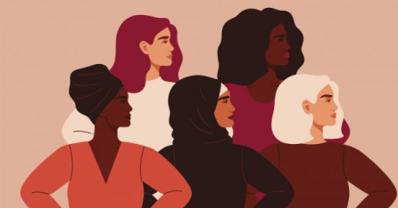

Fighting for 8th March
Follow the story of Clara Zetkin, the woman who fought her whole life for gender equality, but above all for this emblematic date.

Read
Films are not just made-up fictions. Yes, there are works inspired by real and historical facts. Such is the case with the 2015 film The Suffragettes. Inspiring, revolting, advocating an image of hope and strength.
The Suffragettes, a must-see film by director Sarah Gavron. With illustrious actresses such as Helena Bonham Carter, Carey Mulligan or Brendan Gleeson.
The story is set in England in 1912 and 1913, when women from different social classes revolt. Together, in violence and fear, they obtain the rights they have been demanding for years. Maud Watts, the main character of this plot, is a young woman with no problems who works in a laundry. One day she finds herself in a riot between the police and the suffragettes. It is then that she realises that things can change.
Sarah takes part in a speech given by a minister's wife. She takes part in various demonstrations, fights the police and takes part in violent acts. Bombing mailboxes, destroying a parliamentary residence, her radicalisation causes her to lose everything. Her husband evicts her, her son is adopted, only the suffragettes count. Several violent and tragic events led by Emmeline Pankhurst will allow the suffragettes to obtain the right to vote.
The suffragette movement started in 1832 in Great Britain. 19 years later, women's right to vote was only mentioned in parliament, without success. This was followed by movements in the United States and France beginning in the 19th century. This is where Emmeline Pankhurst, featured in the film, comes in. Emmeline founded the Women's Social and Political Union in 1903. This was a feminist organisation fighting for women's right to vote in the UK.
This is when the suffragette movement began. Some women began to assert themselves at various political meetings and were eventually arrested. Peaceful demonstrations did not produce any results, so another strategy had to be considered. More violent, more aggressive measures are used. The suffragettes started by setting fire to men-only institutions, even planting bombs. These bombs destroyed Westminster Abbey, St Paul's Cathedral and many other buildings. But it must be remembered that in 1914 a world event was to take place. Disrupt the suffragette march.
Men are sent to the front and only women can save the country from a labour shortage. The suffragette movement led by Emmeline and her sister Christabel imposed a 'ceasefire'. The post-war period was a major event that challenged the place of women in society. The acts of violence inside and outside the country, despite their atrocity, bore fruit. The suffragettes brought their demands to the attention of politicians who passed a law in 1918 giving women the right to vote.
The right to vote for women was granted in 1918, provided they were at least 30 years old. It was not until 1928 that the conditions changed to become similar to men's rights, i.e. at the age of 21.
While there is still much inequality to be overcome today, past acts are not in vain. Sarah Gavron is an example. A British director, she is not defined as a feminist, but she has played her part in this movement. Her talent is no accident, having won four awards, notably for The Suffragettes. With an almost entirely female cast, her film brings a real sense of pride. Like Clara Zetkin or Gloria Steinem, every act, no matter how big or small, is a strong act. Whether the involvement is political, journalistic or artistic, each person has a role to play.
Like the Suffragettes, discover feminists who, in their own way, made a difference.
Known as the first French feminist with her book "La Cité des Dames".
French feminist and politician who wrote "Declaration of the Rights of Women and the Citizen".
She is an Australian feminist who has led the fight for women's rights.
A German feminist, she was the first to propose 8 March as Women's Day.
An English feminist and suffragette, she led the Suffragette movement.
A French feminist, she became a major figure in this movement with the publication of her book "The Second Sex".
An icon of French women, she pushed through the law for the voluntary interruption of pregnancy.
American activist and feminist fighting against racism and discrimination against women. Her trial is still echoing today.
British actress, feminist and model. Known for her film roles, she became a committed feminist in her teens.
Follow the story of Clara Zetkin, the woman who fought her whole life for gender equality, but above all for this emblematic date.
Living to exist, writing to denounce, this is how Gloria Steinem does it. Her genius helps and gives hope to feminists today.